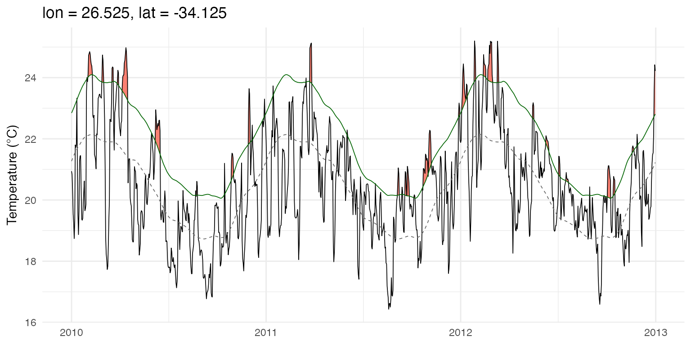
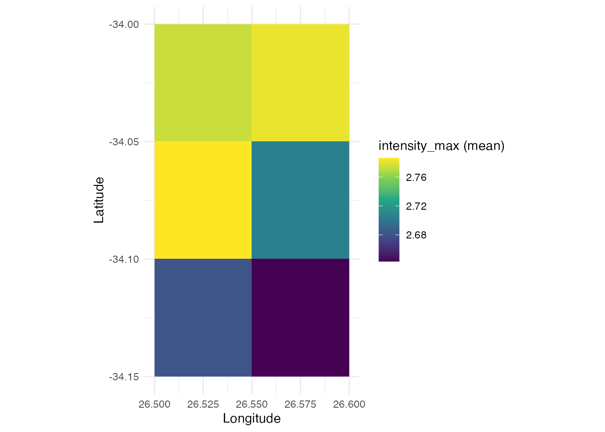

Introduction
heatwave3 detects marine heatwaves (MHWs) and cold-spells directly on gridded NetCDF data using the Hobday et al. (2016, 2018) definition. All core algorithms are implemented in C++ with OpenMP parallelism, making it orders of magnitude faster than per-pixel processing with heatwaveR.
The typical workflow has three steps:
-
ts2clm3(), to compute seasonal and threshold climatologies -
detect_event3(), to detect events from the climatologies - Analyse/visualise with
category3(),block_average3(),detect_blob3(), or the plotting functions
Data input
heatwave3 accepts three kinds of SST input:
- A single multi-timestep NetCDF file (such as a merged time series)
- A vector of daily NetCDF file paths
-
A directory containing daily
.ncor.nc4files
NetCDF variable and dimension names are auto-detected using CF
conventions (axis, standard_name,
units attributes) and common naming patterns. This means
the package works with GHRSST, OISST, OSTIA, ERA5, CMIP6, and other
datasets without needing to specify dimension names.
library(heatwave3)
# Single multi-timestep file. 'name' is a path stem; ts2clm3() writes
# <name>_clim.nc.
sst_file <- "/path/to/sst_merged.nc"
ts2clm3(file_in = sst_file,
name = "benguela",
climatologyPeriod = c("1982-01-01", "2011-12-31"),
lon_range = c(15, 35), lat_range = c(-38, -28),
n_threads = 4)
# Directory of daily files
ts2clm3(file_in = "/path/to/daily_sst/",
name = "benguela",
climatologyPeriod = c("1982-01-01", "2011-12-31"),
n_threads = 4)
# Explicit vector of file paths
daily_files <- list.files("/path/to/daily/", pattern = "[.]nc4$",
full.names = TRUE)
ts2clm3(file_in = daily_files,
name = "benguela",
climatologyPeriod = c("1982-01-01", "2011-12-31"),
n_threads = 4)Basic pipeline
Here we show the full pipeline using the bundled OSTIA test dataset (3×2 pixels off the Agulhas coast, 1982–2021, 40 years of daily SST).
library(heatwave3)
sst_file <- system.file("extdata/sst_test.nc", package = "heatwave3")
stem <- file.path(tempdir(), "demo")
# All-in-one: climatology + event detection. A single 'name' stem produces
# demo_clim.nc and demo_events.nc.
detect3(file_in = sst_file,
name = stem,
climatologyPeriod = c("1982-01-01", "2011-12-31"),
n_threads = 2)
#> Reading SST data from /private/var/folders/3w/nmplbnm109b9903rx8z9q0kc0000gn/T/RtmppsylXt/temp_libpathec9b232dd03/heatwave3/extdata/sst_test.nc...
#> Grid: 2 lon x 3 lat x 14276 time = 6 pixels
#> Computing climatology with 2 thread(s)...
#> 6/6 pixels (100%)
#> Writing climatology to /var/folders/3w/nmplbnm109b9903rx8z9q0kc0000gn/T//RtmpjBSJ9O/demo_clim.nc...
#> Done.
#>
#> ------------------------------------------------------------------
#> Climatology written to: /var/folders/3w/nmplbnm109b9903rx8z9q0kc0000gn/T//RtmpjBSJ9O/demo_clim.nc
#> Rows (long format): 2,196 grid: 2 lon x 3 lat
#>
#> Head:
#> lon lat doy seas thresh
#> 1 26.525 -34.125 1 294.4208 295.9951
#> 2 26.525 -34.125 2 294.4648 296.0311
#> 3 26.525 -34.125 3 294.5088 296.0720
#> 4 26.525 -34.125 4 294.5524 296.1133
#> 5 26.525 -34.125 5 294.5955 296.1553
#>
#> Tail:
#> lon lat doy seas thresh
#> 2192 26.575 -34.025 362 293.5308 295.1848
#> 2193 26.575 -34.025 363 293.5672 295.2141
#> 2194 26.575 -34.025 364 293.6065 295.2460
#> 2195 26.575 -34.025 365 293.6480 295.2776
#> 2196 26.575 -34.025 366 293.6907 295.3100
#>
#> Summary:
#> ocean pixels (valid climatology): 6
#> seas: 291.1 to 295.6
#> thresh: 292.4 to 297.6
#>
#> Examine with hw3_export("/var/folders/3w/nmplbnm109b9903rx8z9q0kc0000gn/T//RtmpjBSJ9O/demo_clim.nc", n = 20)
#> or export with hw3_export("/var/folders/3w/nmplbnm109b9903rx8z9q0kc0000gn/T//RtmpjBSJ9O/demo_clim.nc", file_out = "out.csv") (.csv/.rds/.parquet)
#> ------------------------------------------------------------------
#> Reading climatology from /var/folders/3w/nmplbnm109b9903rx8z9q0kc0000gn/T//RtmpjBSJ9O/demo_clim.nc...
#> Reading SST data from /private/var/folders/3w/nmplbnm109b9903rx8z9q0kc0000gn/T/RtmppsylXt/temp_libpathec9b232dd03/heatwave3/extdata/sst_test.nc...
#> Grid: 2 lon x 3 lat x 14276 time = 6 pixels
#> Detecting events with 2 thread(s)...
#> 6/6 pixels (100%)
#> Found 610 events across 6 pixels
#> Writing events to /var/folders/3w/nmplbnm109b9903rx8z9q0kc0000gn/T//RtmpjBSJ9O/demo_events.nc...
#> Done.
#>
#> ------------------------------------------------------------------
#> Events written to: /var/folders/3w/nmplbnm109b9903rx8z9q0kc0000gn/T//RtmpjBSJ9O/demo_events.nc
#> Rows (long format): 610
#>
#> Head:
#> lon lat pixel_index event_no date_start date_peak date_end duration
#> 1 26.525 -34.125 0 1 1982-11-06 1982-11-14 1982-11-24 19
#> 2 26.525 -34.125 0 2 1983-04-19 1983-04-20 1983-04-23 5
#> 3 26.525 -34.125 0 3 1983-05-27 1983-05-30 1983-06-01 6
#> 4 26.525 -34.125 0 4 1983-06-24 1983-06-25 1983-06-30 7
#> 5 26.525 -34.125 0 5 1983-07-10 1983-07-12 1983-07-15 6
#> intensity_mean intensity_max intensity_var intensity_cumulative
#> 1 2.2099 3.1531 0.5616 41.9874
#> 2 3.4849 3.6150 0.1535 17.4243
#> 3 1.9696 2.0416 0.0668 11.8179
#> 4 1.9655 2.4626 0.3339 13.7587
#> 5 1.5890 1.8050 0.1784 9.5342
#> intensity_mean_relThresh intensity_max_relThresh intensity_var_relThresh
#> 1 0.6780 1.6275 0.5667
#> 2 1.6822 1.8107 0.1481
#> 3 0.2178 0.2885 0.0702
#> 4 0.5567 1.0416 0.3225
#> 5 0.2596 0.4747 0.1772
#> intensity_cumulative_relThresh intensity_mean_abs intensity_max_abs
#> 1 12.8813 295.2789 296.22
#> 2 8.4110 297.9640 298.10
#> 3 1.3069 295.6150 295.67
#> 4 3.8969 294.7100 295.27
#> 5 1.5575 294.0717 294.29
#> intensity_var_abs intensity_cumulative_abs rate_onset rate_decline
#> 1 0.5886 5610.30 0.1840 0.1471
#> 2 0.1573 1489.82 0.1007 0.0349
#> 3 0.0677 1773.69 0.0303 0.0282
#> 4 0.3945 2062.97 0.2077 0.1885
#> 5 0.1824 1764.43 0.1363 0.1270
#>
#> Tail:
#> lon lat pixel_index event_no date_start date_peak date_end
#> 606 26.575 -34.075 4 100 2019-02-27 2019-03-02 2019-03-04
#> 607 26.575 -34.075 4 101 2019-07-07 2019-07-11 2019-07-14
#> 608 26.575 -34.075 4 102 2019-08-29 2019-08-31 2019-09-04
#> 609 26.575 -34.075 4 103 2019-10-19 2019-10-26 2019-10-31
#> 610 26.575 -34.075 4 104 2020-07-05 2020-07-06 2020-07-09
#> duration intensity_mean intensity_max intensity_var intensity_cumulative
#> 606 6 2.3280 2.6520 0.2624 13.9679
#> 607 8 1.9937 2.4175 0.2732 15.9493
#> 608 7 2.4202 2.9167 0.5184 16.9417
#> 609 13 2.5752 3.9481 0.7323 33.4774
#> 610 5 1.9388 2.5567 0.4944 9.6940
#> intensity_mean_relThresh intensity_max_relThresh intensity_var_relThresh
#> 606 0.4701 0.7911 0.2549
#> 607 0.6743 1.1037 0.2807
#> 608 1.0094 1.5135 0.5207
#> 609 1.0904 2.4535 0.7207
#> 610 0.5972 1.2075 0.4848
#> intensity_cumulative_relThresh intensity_mean_abs intensity_max_abs
#> 606 2.8209 297.2000 297.52
#> 607 5.3942 294.2825 294.70
#> 608 7.0655 294.1014 294.60
#> 609 14.1748 294.5685 295.96
#> 610 2.9861 294.2600 294.89
#> intensity_var_abs intensity_cumulative_abs rate_onset rate_decline
#> 606 0.2535 1783.20 0.1799 0.0644
#> 607 0.2628 2354.26 0.1482 0.0497
#> 608 0.5172 2058.71 0.5040 0.2357
#> 609 0.7987 3829.39 0.2713 0.2823
#> 610 0.5098 1471.30 0.3171 0.3182
#>
#> Summary:
#> events: 610 pixels with events: 6
#> dates: 1982-11-06 to 2020-09-26
#> duration (days): 5 to 38
#> intensity_max: 1.314 to 4.911
#>
#> Examine with hw3_export("/var/folders/3w/nmplbnm109b9903rx8z9q0kc0000gn/T//RtmpjBSJ9O/demo_events.nc", n = 20)
#> or export with hw3_export("/var/folders/3w/nmplbnm109b9903rx8z9q0kc0000gn/T//RtmpjBSJ9O/demo_events.nc", file_out = "out.csv") (.csv/.rds/.parquet)
#> ------------------------------------------------------------------
# The two products follow the naming convention <name>_clim.nc / <name>_events.nc
clim_file <- paste0(stem, "_clim.nc")
event_file <- paste0(stem, "_events.nc")Per-pixel time series plot
Extract a single pixel and produce a heatwaveR-style event line plot with flame polygons showing events above the threshold.
event_line3(sst_file = sst_file,
clim_file = clim_file,
lon = 26.525, lat = -34.125,
start_date = "2010-01-01",
end_date = "2012-12-31")
Spatial maps
Visualise the spatial distribution of any event metric across the grid.
plot_metric3(event_file, metric = "intensity_max", summary = "mean")
Event categories and yearly aggregation
cats <- category3(event_file, clim_file)
head(cats)
#> event_no lon lat peak_date category intensity_max duration p_moderate
#> 1 1 26.525 -34.125 1982-11-14 <NA> 3.1531 19 0
#> 2 2 26.525 -34.125 1983-04-20 <NA> 3.6150 5 0
#> 3 3 26.525 -34.125 1983-05-30 <NA> 2.0416 6 0
#> 4 4 26.525 -34.125 1983-06-25 <NA> 2.4626 7 0
#> 5 5 26.525 -34.125 1983-07-12 <NA> 1.8050 6 0
#> 6 6 26.525 -34.125 1983-07-21 <NA> 1.9993 7 0
#> p_strong p_severe p_extreme season
#> 1 0 0 0
#> 2 0 0 0
#> 3 0 0 0
#> 4 0 0 0
#> 5 0 0 0
#> 6 0 0 0
table(cats$category)
#> < table of extent 0 >
ba <- block_average3(event_file)
head(ba)
#> lon lat year count duration_mean duration_max intensity_mean
#> 1 26.525 -34.125 1982 1 19.00000 19 2.209900
#> 2 26.525 -34.125 1983 5 6.20000 7 2.130060
#> 3 26.525 -34.125 1984 2 7.00000 9 2.016500
#> 4 26.525 -34.125 1985 2 5.00000 5 1.632900
#> 5 26.525 -34.125 1986 5 8.40000 14 2.530060
#> 6 26.525 -34.125 1987 3 11.66667 15 2.399233
#> intensity_max_mean intensity_max_max intensity_cumulative_mean total_days
#> 1 3.153100 3.1531 41.98740 19
#> 2 2.384700 3.6150 12.80478 31
#> 3 2.448550 2.7094 13.67920 14
#> 4 1.723400 1.9355 8.16455 10
#> 5 3.153800 3.8774 21.01420 42
#> 6 2.840733 3.1123 28.25203 35
#> total_icum
#> 1 41.9874
#> 2 64.0239
#> 3 27.3584
#> 4 16.3291
#> 5 105.0710
#> 6 84.7561Detrended climatology
By default, ts2clm3() follows Hobday et al. (2016) with
a fixed baseline. To remove the long-term warming trend before computing
the climatology (following Jacox et al. 2020), set
detrend = TRUE:
Output formats
The compute functions always write their native NetCDF. To read a
product into R, or export it to CSV/RDS/Parquet, use
hw3_export(), which auto-detects the product type:
# Read the events back as a data.frame (whole, or a quick preview with n =)
events <- hw3_export("benguela_events.nc")
head(hw3_export("benguela_events.nc", n = 20))
# Export to flat files (format chosen by the extension)
hw3_export("benguela_events.nc", file_out = "events.csv")
hw3_export("benguela_clim.nc", file_out = "clim.parquet")Cold spells
Detect marine cold-spells by setting pctile = 10 for the
climatology and coldSpells = TRUE for detection.
ts2clm3(file_in = sst_file,
name = "benguela_cold",
climatologyPeriod = c("1982-01-01", "2011-12-31"),
pctile = 10, n_threads = 2)
detect_event3(file_in = sst_file,
name = "benguela_cold",
coldSpells = TRUE, n_threads = 2)Spatial blob detection
The examples below reproduce the spatial blob analysis from Schlegel et al., using the OSTIA dataset covering the South African coast (15–35°E, 28–38°S). They show heatwave blob footprints, daily area evolution, centroid trajectories, persistence maps, and the cold-spell equivalents.
All six figure types correspond to the example outputs in
heatwaveR/dev_doc/figs/.
Setup: climatology and blob detection
library(heatwave3)
library(ggplot2)
sst_file <- "/Volumes/OceanData/OSTIA_East_Coast_MHW/SWIO_Jan1982-Dec2021.nc"
xlim <- c(15, 35); ylim <- c(-38, -28)
clim_file <- ts2clm3(file_in = sst_file,
name = file.path(tempdir(), "swio"),
climatologyPeriod = c("1982-01-01", "2011-12-31"),
lon_range = xlim, lat_range = ylim,
var_name = "analysed_sst",
n_threads = 4)
# Detect spatial blobs, including voxel data for footprint maps
blobs <- detect_blob3(file_in = sst_file,
clim_file = clim_file,
var_name = "analysed_sst",
minVoxels = 200L,
topN = 10L,
rankBy = "cumI_km2_day",
return = c("event", "daily", "voxel"))
# Coastline for map overlays
land <- rnaturalearth::ne_countries(scale = "medium", returnclass = "sf")
land_clip <- sf::st_crop(land, xmin = xlim[1], xmax = xlim[2],
ymin = ylim[1], ymax = ylim[2])Figure 1: Top 6 blob peak-day footprints
top6 <- blobs$event[1:6, ]
top6$blob_lbl <- paste0("#", top6$rank, " | ", top6$date_peak)
vox6 <- blobs$voxel[blobs$voxel$blob %in% top6$blob, ]
vox6$blob_lbl <- top6$blob_lbl[match(vox6$blob, top6$blob)]
# Filter to peak date for each blob
vox6_peak <- do.call(rbind, lapply(split(vox6, vox6$blob), function(sub) {
peak <- top6$date_peak[top6$blob == sub$blob[1]]
sub[sub$date == peak, ]
}))
ggplot() +
geom_sf(data = land_clip, fill = "grey92", colour = "grey60", linewidth = 0.2) +
geom_raster(data = vox6_peak, aes(lon, lat, fill = delta)) +
scale_fill_viridis_c(name = expression(Delta ~ "(K)"),
option = "inferno", direction = 1) +
facet_wrap(~ blob_lbl, ncol = 3) +
coord_sf(xlim = xlim, ylim = ylim, expand = FALSE) +
labs(title = "OSTIA spatial heatwave blobs: top 6 by |cumI|, peak-day footprints",
subtitle = "Region 15-35 E, 38-28 S",
x = "Longitude", y = "Latitude") +
theme_minimal(base_size = 10) +
theme(strip.text = element_text(face = "bold"))Figure 2: Daily area of top 6 blobs
daily6 <- blobs$daily[blobs$daily$blob %in% top6$blob, ]
daily6$blob_lbl <- factor(top6$blob_lbl[match(daily6$blob, top6$blob)],
levels = top6$blob_lbl)
ggplot(daily6, aes(date, area_km2 / 1000, colour = blob_lbl)) +
geom_line(linewidth = 0.8) +
scale_colour_viridis_d(name = "rank", option = "turbo") +
labs(title = "Daily area of top 6 spatial heatwave blobs",
x = NULL, y = expression(Area ~ (10^3 ~ km^2))) +
theme_minimal(base_size = 11)Figure 3: Centroid trajectories of top 3 blobs
top3 <- blobs$event[1:3, ]
top3$blob_lbl <- paste0("#", top3$rank, " (", top3$date_peak, ")")
daily3 <- blobs$daily[blobs$daily$blob %in% top3$blob, ]
daily3$blob_lbl <- factor(top3$blob_lbl[match(daily3$blob, top3$blob)],
levels = top3$blob_lbl)
for (b in unique(daily3$blob)) {
idx <- daily3$blob == b
daily3$day_from_start[idx] <- as.numeric(
daily3$date[idx] - min(daily3$date[idx])
)
}
ggplot() +
geom_sf(data = land_clip, fill = "grey92", colour = "grey60", linewidth = 0.2) +
geom_path(data = daily3, aes(centroid_lon, centroid_lat,
colour = day_from_start), linewidth = 0.6) +
geom_point(data = daily3, aes(centroid_lon, centroid_lat,
colour = day_from_start,
size = area_km2 / 1000), alpha = 0.7) +
scale_colour_viridis_c(name = "day from start") +
scale_size_continuous(name = expression(Area ~ (10^3 ~ km^2)),
range = c(0.5, 5)) +
facet_wrap(~ blob_lbl, ncol = 3) +
coord_sf(xlim = xlim, ylim = ylim, expand = FALSE) +
labs(title = "Centroid trajectories of top 3 blobs",
x = "Longitude", y = "Latitude") +
theme_minimal(base_size = 10)Figure 4: Persistence, days under heatwave per pixel
vox3 <- blobs$voxel[blobs$voxel$blob %in% top3$blob, ]
vox3$blob_lbl <- factor(top3$blob_lbl[match(vox3$blob, top3$blob)],
levels = top3$blob_lbl)
# Count days per (blob, lon, lat)
vox3_persist <- aggregate(date ~ blob_lbl + lon + lat, data = vox3,
FUN = length)
names(vox3_persist)[4] <- "n_days"
ggplot() +
geom_sf(data = land_clip, fill = "grey92", colour = "grey60", linewidth = 0.2) +
geom_raster(data = vox3_persist, aes(lon, lat, fill = n_days)) +
scale_fill_viridis_c(name = "days under event", option = "plasma") +
facet_wrap(~ blob_lbl, ncol = 3) +
coord_sf(xlim = xlim, ylim = ylim, expand = FALSE) +
labs(title = "Footprint persistence: days under heatwave per pixel, top 3 blobs",
x = "Longitude", y = "Latitude") +
theme_minimal(base_size = 10)Figure 5: Cold-spell blob footprints
clim_cold <- ts2clm3(file_in = sst_file,
name = file.path(tempdir(), "swio_cold"),
climatologyPeriod = c("1982-01-01", "2011-12-31"),
lon_range = xlim, lat_range = ylim,
var_name = "analysed_sst",
pctile = 10, n_threads = 4)
mcs_blobs <- detect_blob3(file_in = sst_file,
clim_file = clim_cold,
var_name = "analysed_sst",
coldSpells = TRUE,
minVoxels = 200L,
topN = 10L,
rankBy = "cumI_km2_day",
return = c("event", "daily", "voxel"))
mcs6 <- mcs_blobs$event[1:6, ]
mcs6$blob_lbl <- paste0("#", mcs6$rank, " | ", mcs6$date_peak)
mvox6 <- mcs_blobs$voxel[mcs_blobs$voxel$blob %in% mcs6$blob, ]
mvox6$blob_lbl <- mcs6$blob_lbl[match(mvox6$blob, mcs6$blob)]
mvox6_peak <- do.call(rbind, lapply(split(mvox6, mvox6$blob), function(sub) {
peak <- mcs6$date_peak[mcs6$blob == sub$blob[1]]
sub[sub$date == peak, ]
}))
mvox6_peak$delta <- -mvox6_peak$delta # show negative anomalies
ggplot() +
geom_sf(data = land_clip, fill = "grey92", colour = "grey60", linewidth = 0.2) +
geom_raster(data = mvox6_peak, aes(lon, lat, fill = delta)) +
scale_fill_viridis_c(name = expression(Delta ~ "(K)"),
option = "mako", direction = 1) +
facet_wrap(~ blob_lbl, ncol = 3) +
coord_sf(xlim = xlim, ylim = ylim, expand = FALSE) +
labs(title = "OSTIA cold-spell blobs: top 6 by |cumI|, peak-day footprints",
subtitle = "Region 15-35 E, 38-28 S",
x = "Longitude", y = "Latitude") +
theme_minimal(base_size = 10) +
theme(strip.text = element_text(face = "bold"))Figure 6: Cold-spell daily area
mdaily6 <- mcs_blobs$daily[mcs_blobs$daily$blob %in% mcs6$blob, ]
mdaily6$blob_lbl <- factor(mcs6$blob_lbl[match(mdaily6$blob, mcs6$blob)],
levels = mcs6$blob_lbl)
ggplot(mdaily6, aes(date, area_km2 / 1000, colour = blob_lbl)) +
geom_line(linewidth = 0.8) +
scale_colour_viridis_d(name = "rank", option = "mako") +
labs(title = "Daily area of top 6 spatial cold-spell blobs",
x = NULL, y = expression(Area ~ (10^3 ~ km^2))) +
theme_minimal(base_size = 11)Performance
heatwave3 runs much faster than per-pixel processing with heatwaveR. On a 20×20 grid (400 pixels, 14,276 daily time steps each):
| Method | Time | Speedup |
|---|---|---|
| heatwaveR (serial, 400 pixels) | ca. 38 sec | 1× |
| heatwave3 (4 threads) | 0.53 sec | ca. 71× |
The speedup comes from:
- C++ implementation of all core algorithms (climatology + event detection)
- OpenMP parallelism across pixels
- Direct NetCDF I/O via libnetcdf (no R overhead)